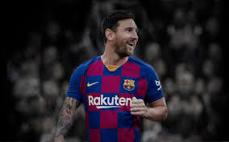

Lionel Andrés Messi Cuccittini is an Argentine professional footballer who plays as a forward and captains both Spanish club Barcelona and the Argentina national team. Wikipedia Born: June 24, 1987 (age 32 years), Rosario, Argentina Height: 5′ 7″ Salary: 26 million GBP (2020) Spouse: Antonela Roccuzzo (m. 2017) Current teams: FC Barcelona (#10 / Forward), Argentina national football team (#10 / Forward) Children: Thiago Messi Roccuzzo, Mateo Messi Roccuzzo, Ciro Messi Roccu
